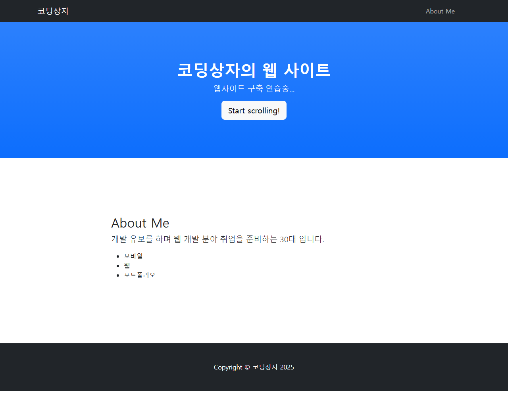
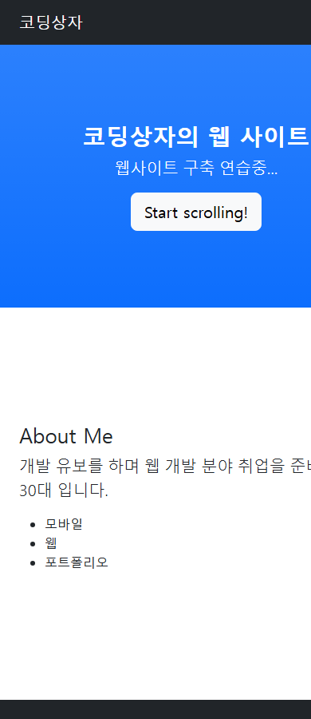

PROJ_06 · 사이트맵 기록 2025년 6월 9일
코딩상자
『지금 바로 만드는 5분 코딩』 그링노마드 종원 폴더의 Start Bootstrap Scrolling Nav 템플릿을 소개 페이지로 고친 정적 사이트입니다. 아래 화면은 2026년 10월 17일에 index.html을 브라우저에서 연 것입니다. 완료 시각을 적은 파일은 없고, 사이트맵의 lastmod가 2025년 6월 9일입니다.
추가 학습 자료
독서 노트의 장 순서를 따라 적었습니다. 철자와 항목은 파일에 있는 그대로입니다.
1장
1-01. 디지털 전환 시대에 코딩이 중요해졌다고 적었습니다. 네카라쿠베, 삼성, 구글, 애플이 서비스를 많이 두고, 컴퓨터와 스마트폰으로 일상을 처리한다고 적었습니다. 돈과 함께, 인터넷이라는 블루오션이 또다른 세상을 만들 수 있다는 뜻으로 받아 적었습니다.
1-02. 생산자로 보는 관점이 중요하다고 적었습니다. 단순한 줄자 앱, 알려진 오픈소스를 조금 고쳐 만든 로또 앱, 노트 철자 그대로 「배트남」 청년이 만든 간단한 게임 앱도 누적 다운로드가 수천만으로 넘어가며 큰 수익이 날 수 있다고 적었습니다. 이어서 「DEVSTU 그랑노마드 종원 개발자 포럼 사이트」라고 한 줄 있습니다. 폴더 이름은 그링노마드입니다.
1-03. 코딩을 필수로 배우고, 의무교육을 받은 학생들이 성인이 되면서 코딩이 배워야 하는 분야가 되었다고 적었습니다. 프로그래밍이 문제 해결 능력을 쌓고 생각을 돕는다고 적었습니다.
1-04. 「즐거움」으로 코딩에 접근하자고 적었습니다.
2장
2-01. 브라우저 기능 F12로 HTML을 보면, 잘 만든 웹사이트의 특정 부분을 원하는 값으로 바꾸기 쉽다고 적었습니다. 예는 네이버 블로그 이웃 수를 100으로 바꿔 보고, 사이트를 만들었을 때 어떻게 보일지 확인하는 것입니다.
2-02. 프로그램을 만들 때 순서를 이렇게 적었습니다. 이 제목은 노트에 두 번 있습니다.
- 프로그램 주제를 정한다.
- 프로그램 내용을 기획한다.
- 프로그램을 구현한다.
같은 제목의 다음 단락은 크롬 개발자 도구입니다. 요소, 소스 탭을 쓰고, 요소에서 특정 요소를 마우스 우클릭한 뒤 요소 복사로 템플릿을 받아 원하는 사이트를 구성한다고 적었습니다. 바꿀 것은 타이틀 문자, 이미지, 글꼴(CSS)입니다. 소스 탭의 작업 환경에 경로를 지정하면 그 경로의 파일을 고치고 브라우저에서 결과를 볼 수 있다고 적었습니다. 요소 탭에서 CSS와 HTML을 고쳐 볼 수는 있어도 저장은 되지 않고, 원하는 요소를 찾을 때 쓴다고 적었습니다.
2-03. 만든 사이트를 인터넷에 내려면 서버에 올려 클라이언트에서 열 수 있어야 한다고 적었습니다. 서버를 직접 구성해 계속 켜 두면 세금, 전자파, 비용이 따른다고 적고, 클라우드의 대표로 AWS, Azure, Heroku, Netlify를 적었습니다. Netlify에 프로젝트 파일을 올리면 호스팅 주소로 접속한다고 적었습니다. 네이버 서치어드바이저에 사이트를 등록하고, robots.txt와 sitemap.xml을 넣고, metatags.io로 사이트 미리보기 메타 태그를 만들면 네이버 상위 노출과 특정 검색어 노출을 기대할 수 있다고 적었습니다. SEO는 더 구체적으로 다뤄 봐야 한다고 적어 두었습니다.
2-04. 구름IDE에서 프로젝트를 만들고, 노트 철자 그대로 reactive-native를 설치한 뒤 npm으로 webview와 expo를 설치한다고 적었습니다. Expo WebView 문서에서 url만 지정하면 호스팅한 사이트를 웹뷰에 넣어 앱으로 패키징할 수 있다고 적었습니다. 노트에는 「웹뷰네 너어서」라고 되어 있습니다. 앱 스토어에서 expo 또는 expo-client를 받고, QR 코드로 나온 앱을 설치하면 모바일에서 확인한다고 적었습니다. 이 폴더의 readme는 이 패키징이 설치 오류로 아직 없다고 적습니다.
3장
3-01, 02. 코딩을 하는 경우와, AI로 자동화한 도구가 호스팅까지 함께 서비스하는 경우의 장단점을 적었습니다. 시간과 노력을 들이면, 적은 돈이어도 기술 스택을 쌓아 자기 웹사이트를 만들고 질 좋은 사이트를 직접 만들 수 있는 방법도 좋다고 적었습니다. 노트 철자는 「기술스텍」입니다.
이어서 다음에 할 주제를 파일에 있는 순서와 철자로 적었습니다.
- 알고리즘 및 토이프로젝트 오픈소스 개발
- 온텍트 비즈니스 및 4차산업혁명
- 웹사이트 이쁘게 꾸미기
- 워드프레스 쇼핑몰, 커뮤니티 + 제휴마케팅
- 네이버, 인스타그램등 복제사이트
- 초단간 => 고급 수익형 앱 스토어 출시
- 애자일 데브옵스 업무 프로세스
- 업무 자동화 도구만들기(엑셀, 메일, 노션, DB)
- 업무자동화 도구 만들기2(쳇봇, 카톡, 블로그 등 SNS)
- 업무 자동화 및 수익화 도구(크롤링, 플레ㅅ폼, 빅데이터 모델링, 자동화봇)
- 해커톤 및 공모전 첼린지
- 찐 개발자의 길(프리랜서, IT회사)
- 노트 지금 바로 만드는 5분 코딩 - 그링노마드 종원 기록하기 독서노트.txt
- 기록 startbootstrap-scrolling-nav-gh-pages/readme.txt
- 그림 images/preview.png. 페이지 HTML에서는 이 파일을 쓰지 않습니다.
폴더에 있던 그림
실행 화면
2026년 10월 17일, index.html을 브라우저에서 열어 찍었습니다. 넓은 창과 좁은 창 둘입니다.


간단 설명
템플릿의 브랜드를 코딩상자로 바꾸고, 머리글은 「코딩상자의 웹 사이트」, 「웹사이트 구축 연습중...」입니다. About Me는 개발 유보를 하며 웹 개발 취업을 준비하는 30대라고 적고, 모바일·웹·포트폴리오를 목록으로 둡니다. Start scrolling!은 About Me로 이동합니다.
scripts.js는 Bootstrap ScrollSpy로 메뉴를 따라가게 하고, 좁은 화면에서 메뉴 항목을 누르면 펼친 메뉴를 닫습니다. 서비스와 연락 구역은 HTML 주석이고, 그 메뉴 링크의 글자도 비어 있습니다. 바닥글은 「코딩상지 2025」입니다.
사용 도구
-
HTML
내비게이션, 머리글, About Me, 바닥글을 담습니다. 서비스와 연락 구역은 주석입니다.
-
Bootstrap
Start Bootstrap Scrolling Nav의 CSS와 Bootstrap 5.2.3 스크립트를 씁니다. 메뉴 접기와 ScrollSpy가 여기 있습니다.
-
JavaScript
scripts.js가 스크롤 위치와 좁은 화면의 메뉴 닫기를 처리합니다.
-
Netlify
메타 태그와 사이트맵에 cordingbox-website.netlify.app 주소가 있습니다. 2026년 10월 17일에는 열리지 않았습니다.
-
SEO
네이버 사이트 인증 메타, Open Graph, robots.txt, sitemap.xml이 있습니다. readme는 세부 설정이 책과 달랐다고 적습니다.
실행 환경
핵심 기능
| 기능 | 하는 일 |
|---|---|
| 스크롤 메뉴 | 위 메뉴의 About Me가 소개 구역으로 이동하고, 스크롤 위치에 따라 메뉴 표시가 따라갑니다. |
| 소개 | 머리글과 About Me, 모바일·웹·포트폴리오 목록을 보여 줍니다. |
| 메타 태그 | 네이버 인증, Open Graph, 트위터 카드, canonical 주소를 넣습니다. canonical 태그는 닫히기 전에 주석이 시작합니다. |
| 검색 파일 | robots.txt는 Yeti를 허용하고, sitemap.xml은 Netlify 주소 하나를 담습니다. |
파일에서 이은 기록
- readme 구름 OS에서 Expo와 React Native로 웹뷰 패키징은 설치 오류로 아직 구현하지 못했다고 적혀 있습니다. SEO는 사이트 등록까지는 됐고, 카테고리 설정은 책과 달랐다고 적혀 있습니다.
- 주소 https://cordingbox-website.netlify.app/ 2026년 10월 17일에 이 주소는 404였습니다.
- robots 사이트맵을 sitemap.txt의 http 주소로 가리킵니다. 폴더에 있는 파일은 sitemap.xml이고 주소는 https입니다.
- 표시 바닥글은 코딩상지, 메뉴의 서비스와 연락은 빈 링크입니다. 설명 메타 태그에는 href 속성이 하나 더 있습니다.